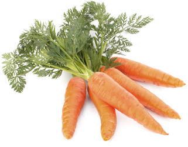

Это морковка. Она полезна для зрения. Ее очень любят зайчики.

Это огурчик. Он полезен для кожи. Его очень любят девочки.

Это картошка. Она полезна для всего. Ее очень любит Катенька.

Это помидорка. Она полезна для кожи. Ее очень любит томатный бог Томаторин.